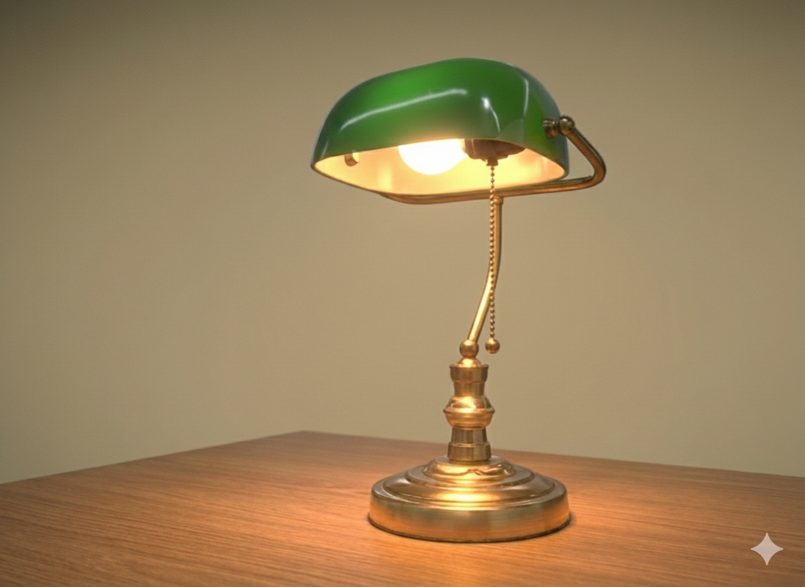

See how light changes a room.
Explore smart lamps designed for modern homes. Rotate the 3D models, then preview how each lamp feels in a real room—from warm and cozy to cool and focused.
View lamps

Lamps
Rotate each 3D model to see the design, then click to open the room lighting demo below.
Focused Cool Lamp
Color Mood Lamp
Minimal Desk Lamp
Ambient Glow Lamp
Studio Task Lamp
Lighting presets in a real room
This demo shows the selected lamp inside a room. Drag the slider to move from a warm, cozy glow to a cool, focused light.

About Lumen Studio
Lumen Studio is an experimental lighting brand built to explore how digital tools and 3D workflows can shape physical products. This site is a prototype that combines AI-assisted 3D rendering with interactive web experiences.
All room images are rendered from the same 3D scene, with five different lighting presets per lamp. On the web, a simple slider maps directly to those presets.